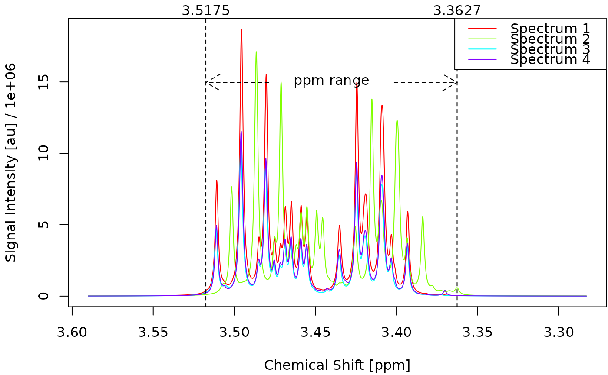

Plot a set of deconvoluted spectra.
Arguments
- obj
An object of type
decons0,decons1ordecons2. For details see Metabodecon Classes.- ...
Additional arguments passed to the conversion function.
- sfy
Scaling factor for the y-axis.
- xlab
Label for the x-axis.
- ylab
Label for the y-axis.
- mar
A numeric vector of length 4, which specifies the margins of the plot.
- lgd
Logical. If TRUE, a legend is drawn.
See also
plot_spectrum() for a much more sophisticated plotting routine
suitable for plotting a single spectrum.
Examples
obj <- deconvolute(sim[1:4], sfr = c(3.55, 3.35))
#> 2025-09-17 14:04:13.19 Starting deconvolution of 4 spectra using 1 worker
#> 2025-09-17 14:04:13.19 Starting deconvolution of sim_01
#> 2025-09-17 14:04:13.19 Removing water signal
#> 2025-09-17 14:04:13.19 Removing negative signals
#> 2025-09-17 14:04:13.19 Smoothing signals
#> 2025-09-17 14:04:13.20 Starting peak selection
#> 2025-09-17 14:04:13.21 Detected 314 peaks
#> 2025-09-17 14:04:13.21 Removing peaks with low pscores
#> 2025-09-17 14:04:13.21 Removed 287 peaks
#> 2025-09-17 14:04:13.21 Initializing Lorentz curves
#> 2025-09-17 14:04:13.21 MSE at peak tiplet positions: 4.0838805770844048836921
#> 2025-09-17 14:04:13.21 Refining Lorentz Curves
#> 2025-09-17 14:04:13.21 MSE at peak tiplet positions: 0.1609359876216345797140
#> 2025-09-17 14:04:13.22 MSE at peak tiplet positions: 0.0228015051613790313556
#> 2025-09-17 14:04:13.22 MSE at peak tiplet positions: 0.0071638016610617799920
#> 2025-09-17 14:04:13.22 Formatting return object as decon2
#> 2025-09-17 14:04:13.23 Finished deconvolution of sim_01
#> 2025-09-17 14:04:13.23 Starting deconvolution of sim_02
#> 2025-09-17 14:04:13.23 Removing water signal
#> 2025-09-17 14:04:13.23 Removing negative signals
#> 2025-09-17 14:04:13.23 Smoothing signals
#> 2025-09-17 14:04:13.24 Starting peak selection
#> 2025-09-17 14:04:13.25 Detected 316 peaks
#> 2025-09-17 14:04:13.25 Removing peaks with low pscores
#> 2025-09-17 14:04:13.25 Removed 286 peaks
#> 2025-09-17 14:04:13.25 Initializing Lorentz curves
#> 2025-09-17 14:04:13.25 MSE at peak tiplet positions: 3.8338943428876719465848
#> 2025-09-17 14:04:13.25 Refining Lorentz Curves
#> 2025-09-17 14:04:13.25 MSE at peak tiplet positions: 0.1289481941626757499630
#> 2025-09-17 14:04:13.25 MSE at peak tiplet positions: 0.0135651899090413786964
#> 2025-09-17 14:04:13.25 MSE at peak tiplet positions: 0.0025556755331531087749
#> 2025-09-17 14:04:13.26 Formatting return object as decon2
#> 2025-09-17 14:04:13.26 Finished deconvolution of sim_02
#> 2025-09-17 14:04:13.26 Starting deconvolution of sim_03
#> 2025-09-17 14:04:13.26 Removing water signal
#> 2025-09-17 14:04:13.26 Removing negative signals
#> 2025-09-17 14:04:13.26 Smoothing signals
#> 2025-09-17 14:04:13.27 Starting peak selection
#> 2025-09-17 14:04:13.28 Detected 333 peaks
#> 2025-09-17 14:04:13.28 Removing peaks with low pscores
#> 2025-09-17 14:04:13.28 Removed 308 peaks
#> 2025-09-17 14:04:13.28 Initializing Lorentz curves
#> 2025-09-17 14:04:13.28 MSE at peak tiplet positions: 1.4917065120183623516681
#> 2025-09-17 14:04:13.28 Refining Lorentz Curves
#> 2025-09-17 14:04:13.28 MSE at peak tiplet positions: 0.0569971157280155932279
#> 2025-09-17 14:04:13.28 MSE at peak tiplet positions: 0.0065629979536274852397
#> 2025-09-17 14:04:13.29 MSE at peak tiplet positions: 0.0013913916281140725414
#> 2025-09-17 14:04:13.29 Formatting return object as decon2
#> 2025-09-17 14:04:13.29 Finished deconvolution of sim_03
#> 2025-09-17 14:04:13.29 Starting deconvolution of sim_04
#> 2025-09-17 14:04:13.29 Removing water signal
#> 2025-09-17 14:04:13.29 Removing negative signals
#> 2025-09-17 14:04:13.29 Smoothing signals
#> 2025-09-17 14:04:13.45 Starting peak selection
#> 2025-09-17 14:04:13.46 Detected 325 peaks
#> 2025-09-17 14:04:13.46 Removing peaks with low pscores
#> 2025-09-17 14:04:13.46 Removed 299 peaks
#> 2025-09-17 14:04:13.46 Initializing Lorentz curves
#> 2025-09-17 14:04:13.46 MSE at peak tiplet positions: 2.2382155282476525748336
#> 2025-09-17 14:04:13.46 Refining Lorentz Curves
#> 2025-09-17 14:04:13.46 MSE at peak tiplet positions: 0.0843491698981613247099
#> 2025-09-17 14:04:13.47 MSE at peak tiplet positions: 0.0101688144550079444944
#> 2025-09-17 14:04:13.47 MSE at peak tiplet positions: 0.0031861616084395915326
#> 2025-09-17 14:04:13.47 Formatting return object as decon2
#> 2025-09-17 14:04:13.47 Finished deconvolution of sim_04
#> 2025-09-17 14:04:13.47 Finished deconvolution of 4 spectra in 0.283 secs
plot_spectra(obj)
